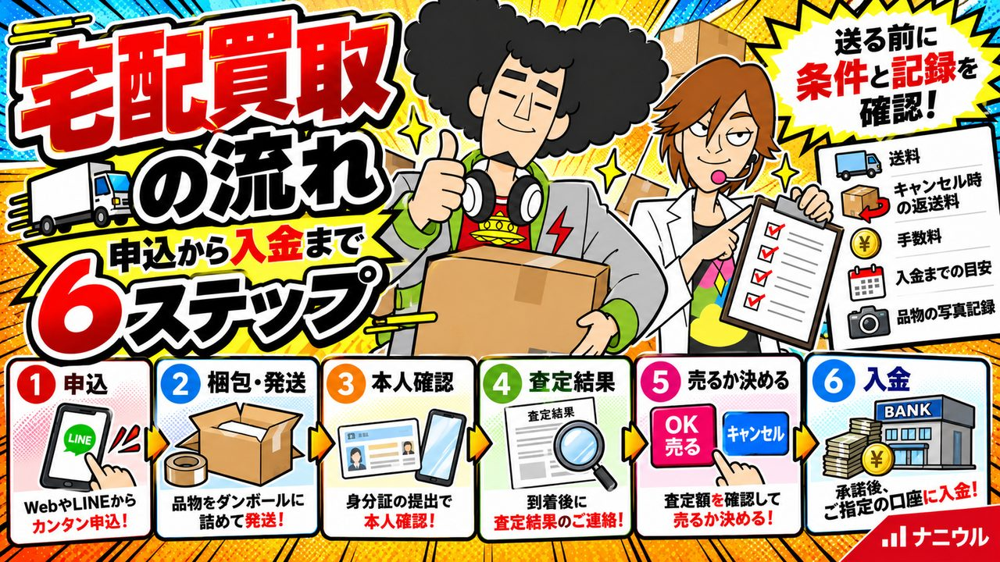

宅配買取の流れ申込から入金までの6ステップと、送る前の注意点
宅配買取は、申込・発送・本人確認・査定・承認・入金の順に進みます。身分証のコピーだけでは法律上の本人確認にならない点、キャンセル時の返送料など、送る前に確かめることを解説します。

結論：送る前に「条件」と「記録」をそろえる
宅配買取は、品物を箱に詰めて送るだけで売れる便利な方法です。ただし、送った後は店と直接話せないため、取引条件を先に確かめ、送る品物を記録しておくことが大切です。
国民生活センターには、「サイトの表示より査定額が大幅に安い」「返送費用を請求された」「品物が紛失した」といった相談が寄せられています（国民生活センター）。この記事では、流れに沿って、こうしたトラブルを防ぐ確認ポイントをまとめます。
宅配買取の流れ（6ステップ）
- 申し込む：サイトやLINEから申し込みます。店によっては梱包キットを送ってくれます。
- 梱包して発送する：品物と、店から指定された書類を同封して送ります。
- 本人確認をする：法律で定められた方法で、売る人が本人であることを確かめます（次の章で説明）。
- 査定結果を受け取る：品物が届いた後、査定額がメールや電話で知らされます。
- 売るか決める：金額に納得できれば承認します。納得できなければキャンセルして返送してもらいます。
- 入金を確認する：承認後、指定の口座に代金が振り込まれます。
順番や連絡方法は店によって違います。申し込む前に、その店の案内ページや規約で確認してください。
宅配買取の本人確認：身分証のコピーだけでは足りない
古物商が顔を合わせずに買い取る場合、法令で定められた方法で本人確認をしなければなりません。運転免許証のコピーを送るだけでは不十分です（警視庁）。
売る側から見ると、次のような方法があります（警視庁）。
| 方法 | 売る人がすること |
|---|---|
| スマホでの本人確認 | 店が指定するアプリで、身分証や自分の顔を撮影して送る |
| 本人限定受取郵便 | 店から届く見積書などを、身分証を見せて受け取り、店に連絡する |
| 転送不要の簡易書留 | 住民票の写しなどを送り、その住所宛てに店から届く簡易書留を受け取る |
| 証明書の送付 | 印鑑登録証明書と実印を押した書面、または住民票の写しなどを品物と一緒に送る |
どの方法でも、住所・氏名・職業・年齢を申し出る必要があります。店がどの方法を使うかは、申込時に案内されます。確認の手順を案内しない店には注意してください。
申し込む前に確かめること
- 送料は誰が負担するか
- キャンセルしたときの返送料はかかるか
- 手数料や振込手数料を引いた受取額はどうなるか
- 査定額の連絡方法と、承認までの期限
- 連絡が取れない場合に、自動で承認される条件がないか
- 入金までの目安
- 輸送中に紛失・破損したときの扱い
国民生活センターは、「高額な表示があっても条件を細かく確認すること」を勧めています（国民生活センター）。
送る前にやっておくこと
- 品物を写真で記録する：全体、傷や汚れのある所、型番や刻印を撮っておきます。紛失や破損のとき、返送された品物の状態を確かめるときに役立ちます。
- 送る品物の一覧を作る：点数と品名を控え、手元に残します。
- 付属品をそろえる：箱・保証書・鑑定書などは、査定に影響することがあります。
- しっかり梱包する：品物を緩衝材で包み、箱の中で動かないようにします。
- 追跡できる方法で送る：伝票の控えを保管します。
宅配と店頭、どちらを選ぶか
| 向いている売り方 | こんなとき |
|---|---|
| 宅配買取 | 近くに店がない、来店する時間が取れない、急ぎではない |
| 店頭買取 | 査定額の理由をその場で聞きたい、高額な品物を手放したくない、すぐに現金が必要 |
宅配では交渉が対面より難しくなります。店の選び方は「失敗しない買取店の選び方」でまとめています。
困ったときの相談先
店との話し合いで解決しないときは、消費生活センターに相談できます。消費者ホットライン「188」に電話して郵便番号を入力すると、最寄りの消費生活センターなどにつながります（政府広報オンライン）。
ナニウルの宅配買取
ナニウルでは、買取金額にかかわらず必ず本人確認を行います。買取には手数料をいただいています。壊れた品物は買取の対象外なので、お送りになる前にご確認ください。送料や入金までの流れは、LINEでお問い合わせください。